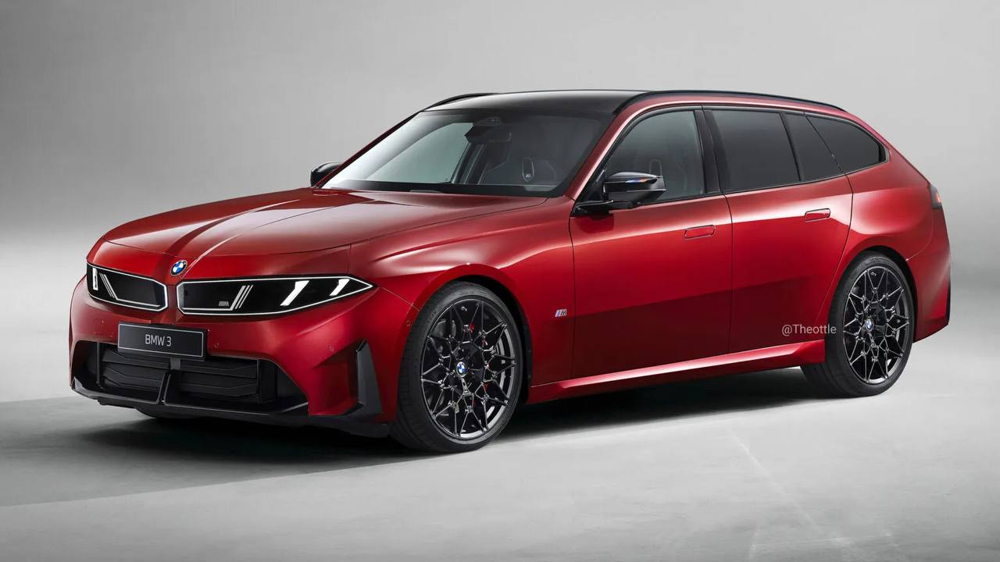
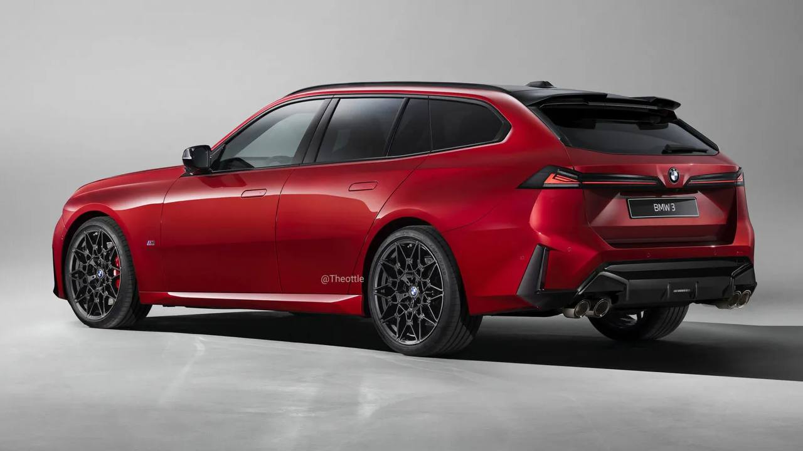
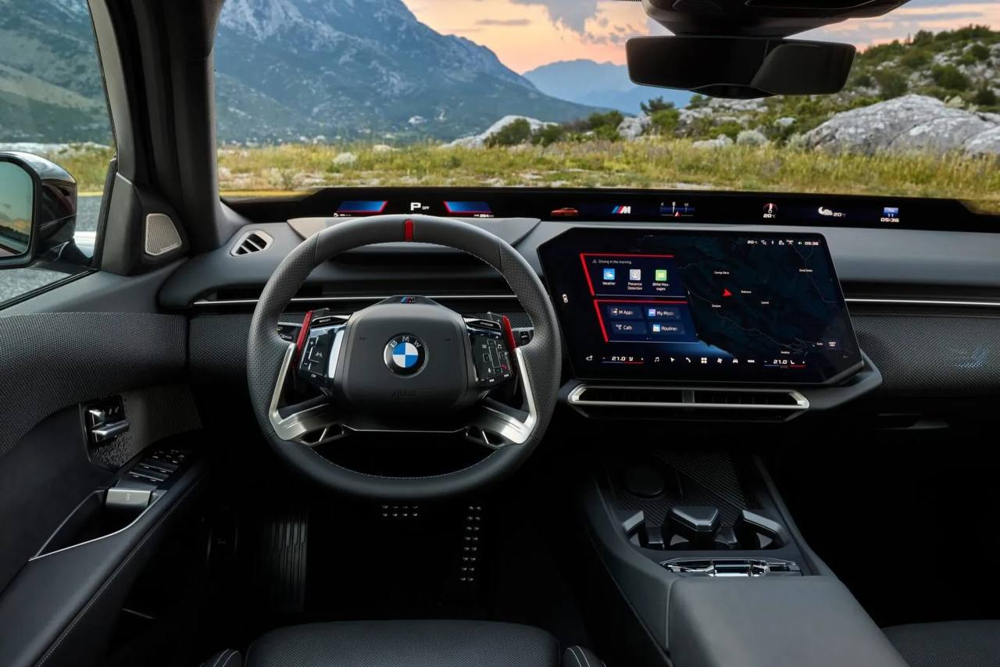

Тачки и Точка
@tachki
Тачки и Точка
@tachki
BMW готовит новую 3 Series Touring G50 в кузове универсал появится уже в следующем году.



BMW готовит новую 3 Series Touring — G50 в кузове универсал появится уже в следующем году.
На рендерах уже показали топовый M350 xDrive с длинной крышей, новым багажником, чёрным декором и четырьмя патрубками выхлопа.
Под капотом — 3,0-литровая турбошестёрка с гибридной установкой на 437 сил. Седан разгоняется до сотни за 4,1 секунды, а универсалу из-за лишнего веса прогнозируют около 4,2 секунды.
🚙 Тачки и Точка
На рендерах уже показали топовый M350 xDrive с длинной крышей, новым багажником, чёрным декором и четырьмя патрубками выхлопа.
Под капотом — 3,0-литровая турбошестёрка с гибридной установкой на 437 сил. Седан разгоняется до сотни за 4,1 секунды, а универсалу из-за лишнего веса прогнозируют около 4,2 секунды.
🚙 Тачки и Точка